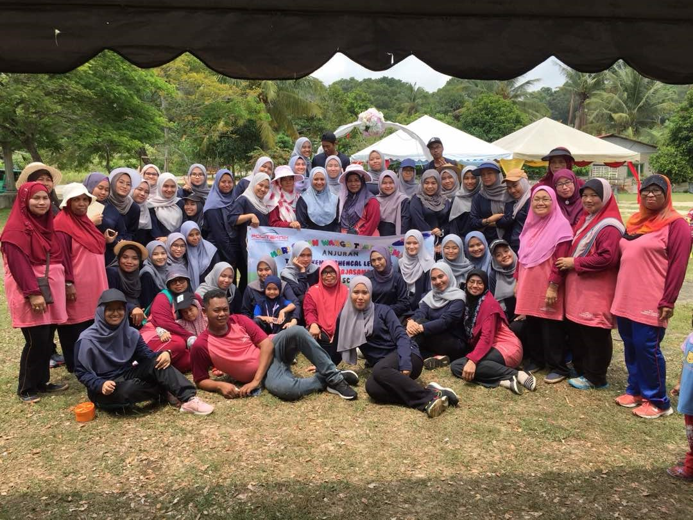
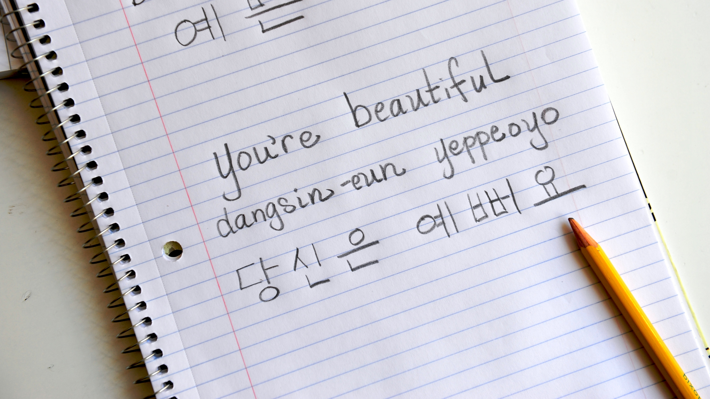

My name is Siti Nur Aqilah binti Roslan. I am a student in Bachelor Degree of Office Management System at Universiti Teknologi MARA Kampus Machang from class D1BA2322A.
I'm so excited to learn and studying more about subject Basic Web Design and Content Management.
Key Features
Fast Speed Typing
Good Work In Team
Able to write and converse in basic Korean
Fast Speed Typing
My first key feature is that I can speed typing because I learn subject Keyboarding Skills in my Diploma at Politeknik Sultan Ahmad Shah (POLISAS). I also join Computer Application Program at POLISAS and I get Speed Typing at 42psm. We need to frequently practice in Speed typing, so that we can be fast in typing. You can try check you speed typing at the button below.
Good Work In Team

My second feature is good work in team. From the picture above is the picture of when I'm doing Diploma at POLISAS and my class hold a programme which is Program Sukaneka Tabika Kemas Chengal Lempong for subject Event Organization. I like to work in group or team which can make the tasks easier to be done. I also like to communicate and know on how to solve problems if there is problem in doing the tasks.
Able to write and converse in basic Korean

My last feature is I able to write and converse in basic Korean. I have a lot of interest in Korea language so I decide to learn Korean on my own because it's costly to take a Korean class. I learn Korean language through internet website, watching Korean Drama and also listening to Korean songs. This below button probably can be a help for you to learn Korean effectively.
Any inquiries, can contact me through my Instagram.